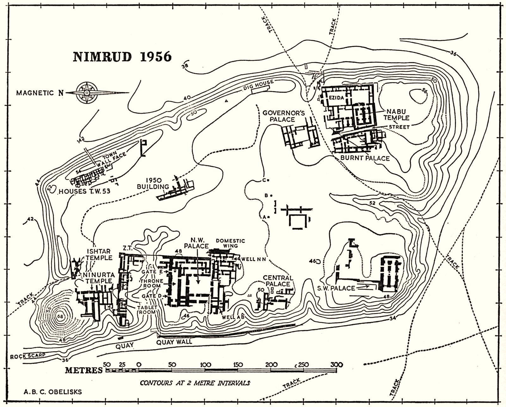

Nimrud

Excavations
The earliest modern mention of Nimrud is made by Claudius James Rich, who visited it in 1820. He collected some antique fragments, which were sent to the British Museum. Austen Henry Layard first visited Nimrud in 1839-40 and returned in 1845 to excavate. On the first day of his excavations, he found room A of the Northwest Palace of Assurnasirpal II, but also a wall of the Southwest Palace of Esarhaddon. For financial and practical reasons, the excavations were mainly carried out by digging tunnels along the stone slabs, which were considered the most important finds.
Because of his limited resources, Layard did a lot himself. He copied the inscriptions, drew the reliefs, made casts, and helped remove and pack the reliefs. This changed when the British Museum started funding the excavations, with money from the government, partly because of the rivalry that had arisen between the museum and the Louvre in Paris.
In 1846 the excavations continued, with the help of Hormuzd Rassam, a brother of the British Vice-Consul in Mosul. Layard left for England in 1851 and never returned to Iraq. Rassam took charge until 1853, both here and on other excavations, after which the British Museum appointed Colonel Henry Creswicke Rawlinson as head of the excavations in Assyria. The finds on the sites, after the great successes of the past, were disappointing and it seemed that the excavations would be abandoned.
Rawlinson enlisted the help of the Assyrian Excavation Fund (AEF), a private organization, which funded the excavations. William Kenneth Loftus, of the AEF, came to Nimrud at Rawlinson's request and excavated there in 1854-1855. In 1855 the era of great excavations ended (partly because of the Crimean War and because the emphasis was placed on the cuneiform tablets). Rassam briefly returned to Nimrud between 1878-1880 on behalf of the British Museum, but no more was excavated.
Palaces
- Assurnasirpal's North West Palace
Assurnasirpal built this palace as his main residence, on the west side of the citadel. The entire building, as far as we know, is essentially the work of Assurnasirpal and construction probably began around 879 BC. After Assurnasirpal, Salmaneser III had repairs and changes made to the palace, and the kings of the 8th century maintained it, but Sargon II was probably the last king to use it as a residence. After that, the palace seems to have been mainly used as storage space. As mentioned earlier, the large narrative reliefs along the walls were an innovation at the time of Assurnasirpal.
Layout
The Northwest Palace consisted of three main components. To the north was the entrance gate (bābānû), which was bordered on the north by storage rooms and offices. On the south side was the façade of the throne room suite (halls B, C and F). The throne room suite was located on a second court, Y, around which other ceremonial suites lay. To the south was the bītānu, the private area of the palace.

- Esarhaddon's South West Palace
This palace, built by Esarhaddon around 672 BC, was never finished. Nevertheless, part of the palace was probably already used. It was eventually destroyed by fire.
The information about this palace is scarce. The best study is 'The Sculptures of Assurnasirpal, Tiglath-Pileser III and Esarhaddon from the Central and Southwest-palaces of Nimrud' by R.D. Barnett and M. D. Falkner from 1962. At that time, little had been excavated, not much more than the throne room and some walls behind it.